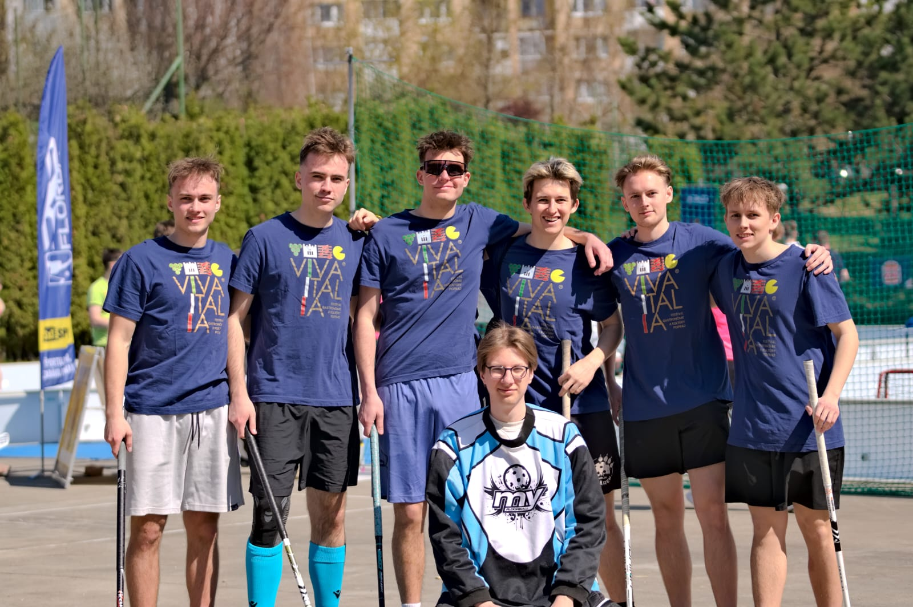

Busy Times
14.04.2026
It took me a really long time to get to this second post. After finishing my exams, I have been busier than I had thought. I see that as a good thing, however, since I have been free to be busy with things I want to do. I have been taking part in a nice cybersecurity course online, making plans for a possible creative work I would like to try on my own, and less successfully sending out job applications.
I will be honest. Based on my recent experience, it has gotten pretty rough to land an entry-level IT job. Maybe it's just my own problem, and I just need to get more experience on my own, but the simplest way to do that is to learn while working, which is now not really an option. For every position, there is a certain number of applicants with at least some experience in that area. Therefore, getting that first experience is a tall task.
But I remain optimistic. After all, as I have said before, I also want to pursue things on my own when I have the time. This website is basically a part of that. I have now implemented a small update which makes it even nicer, in my opinion, and my future dream is to develop a small indie game, of which a demo could be playable here. We will see whether that ever materializes, but I want to try it. As for what else I have been doing: I have visited home, where I met with many old friends and family. I really appreciate that, since I don't get many opportunities like that, considering I live far away now. I also played a lot of floorball and decided I may want to pursue training a little more actively. In the photos you can see our all-star team in our very professional jerseys. Haha.
Anyway, there isn't much more that comes to mind right now, so I will leave it here and just write another post when I think of something.
Yours truly,
Martin

Contact Information